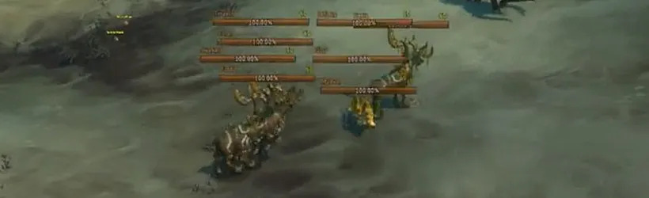

Le pic de 400 millions de joueurs sur World of Warcraft était rempli de bots !?
Au bucher les Paladins

Image de couverture
Une rumeur complètement improbable circule sur les réseaux : World of Warcraft aurait atteint un mystérieux pic de 400 millions de joueurs connectés simultanément.

Screenshot de gameplay
Selon notre enquête exclusive faite le 10/10/24, plus de 40 % de ces comptes auraient été en réalité des bots générés par un supercalculateur dissimulé dans une cave en Lituanie.
Cela vous semblera à un petit nombre mais rappelez-vous que nous sommes entre 2008 et 2010, cela rend les bots plus dur à faire que maintenant

Représentation des bots
Des experts affirment que ces bots étaient capables de faire des donjons, farmer des herbes et même se plaindre dans le chat général.
Blizzard n’a évidemment jamais commenté cette “information”.
Fin de la info. Merci de prendre cela au sérieux.
ceci est une fake news